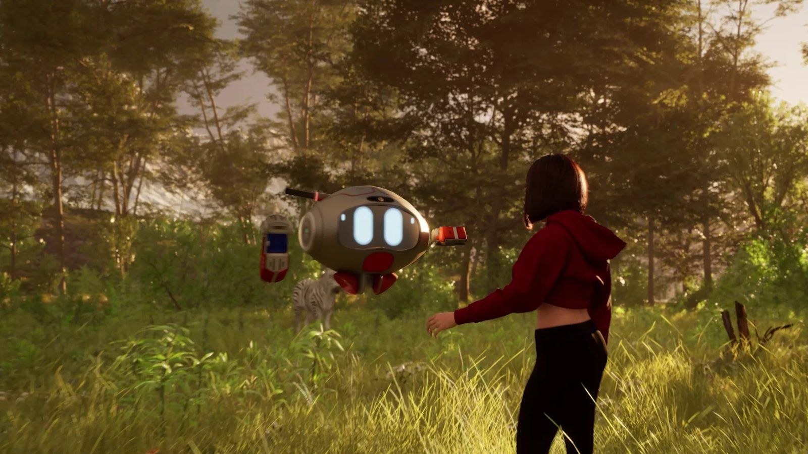
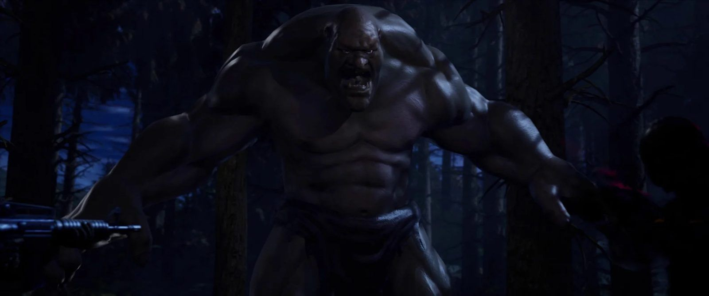
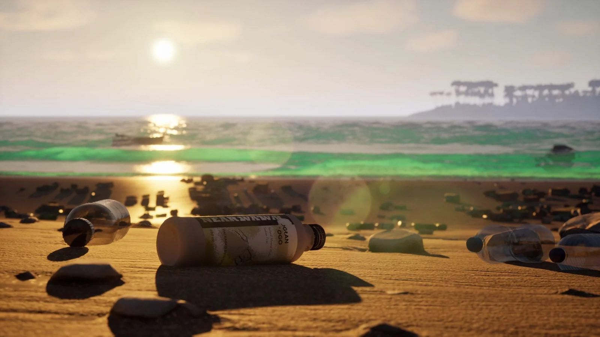
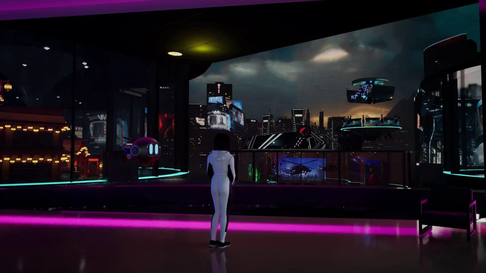
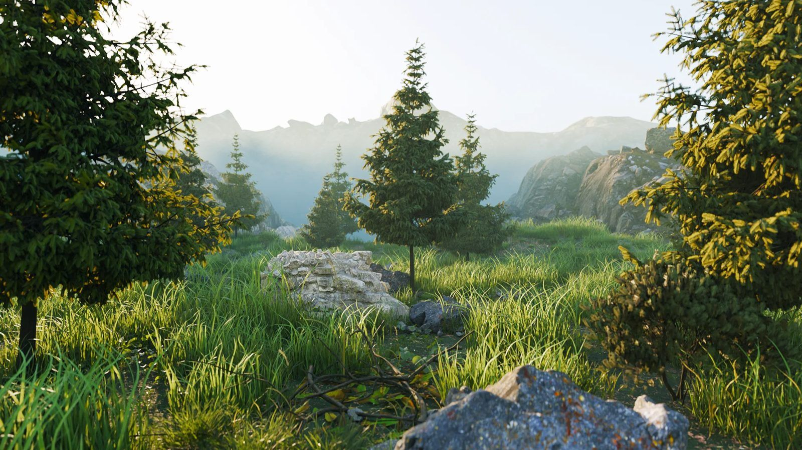

Ils nous ont fait confiance
Nos films, plan par plan
Chaque projet est fabriqué ici, de l'écriture au rendu final.
Trimobé, le foulard rouge
Un ogre lié à un lac cherche sa place parmi les humains. Le projet a reçu le Prix du meilleur pitch aux Rencontres du FIFAM 2026.
Robinet du déchets
Des déchets d'une ruelle de ville jusqu'à la mer, puis une île préservée. Conception et réalisation par Near Studio.
Trimobe
Le premier Trimobe : bande-annonce, cinématique de 6 minutes et making-of. La bande-annonce a dépassé 56 000 vues sur Facebook.
Ploutos
Humain numérique, intérieurs néon, forêt et espaces d'exposition : un univers entièrement construit en 3D.
Ratouh 2.0
Quatre personnages 3D sur les toits d'une ville la nuit.




Ce que nous fabriquons
La cinématique est notre spécialité : films, clips et effets visuels.

Films d'animation
Courts métrages et séries, de l'histoire à l'image finale.
Cinématiques
Séquences 3D pour films, jeux et marques, dans Unreal Engine et Blender.

Clips
Clips musicaux en animation 3D ou avec effets visuels.

VFX
Effets visuels, environnements et simulations intégrés à l'image.

Production virtuelle
Décors 3D en temps réel pour tourner et prévisualiser.

Making-of
Les coulisses de chaque film, montrées sans filtre.
En quelques chiffres
Un film, un clip, une pub ?
Racontez-nous votre projet.
Écrire au studio